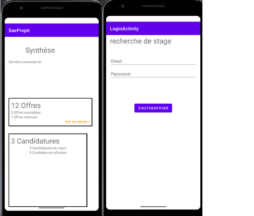
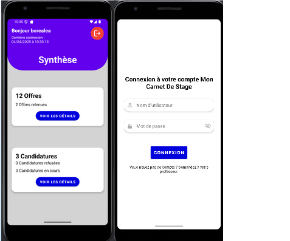
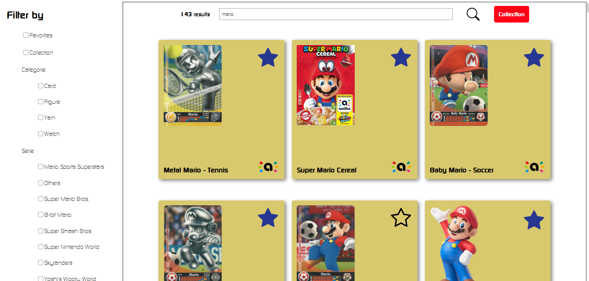
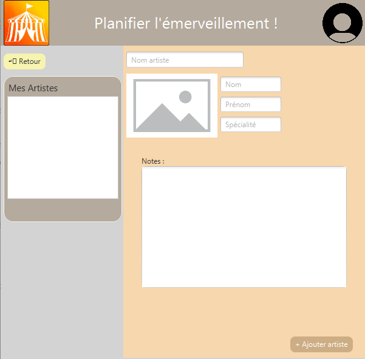
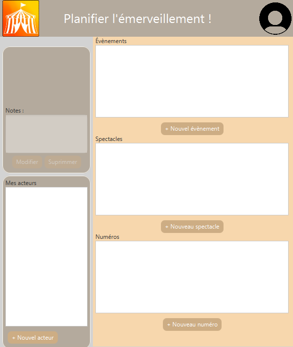

Développeuse Full Stack
Étudiante en informatique, j’aime concevoir des applications web et mobiles utiles, simples à utiliser et bien pensées.
Je développe mes compétences à travers mes études et mes expériences en entreprise.
Je m'appelle Aline Rostagnat et je suis actuellement étudiante en troisième année de Bachelor Universitaire de Technologie en Informatique à l'IUT2 de Grenoble. À partir de la rentrée 2026, je poursuivrai mes études en école d'ingénieurs en informatique en alternance à l'ISIMA à Clermont-Ferrand.
Je me forme au développement full stack, avec une préférence pour les projets où l’on peut réfléchir à l’expérience utilisateur tout en construisant une application solide côté technique. J’aime apprendre de nouvelles choses, travailler en équipe et concrétiser des idées à travers des projets utiles.
cliquer sur une carte pour les détails
Une sélection de projets réalisés pendant mes études et mon temps personnel, autour du développement web, mobile et logiciel.
Reprise et amélioration d’une application mobile permettant aux étudiants de suivre leurs candidatures de stage.


Site web autour du patrimoine culturel français avec une carte interactive et des fonctionnalités sociales.
Application web utilisant une API pour explorer, filtrer et gérer une collection de figurines amiibo.

Application de gestion destinée à organiser des spectacles, des artistes et des représentations dans un cirque.


Vous avez un projet, une question ou simplement envie d’échanger ?